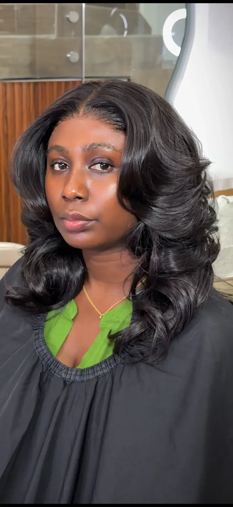
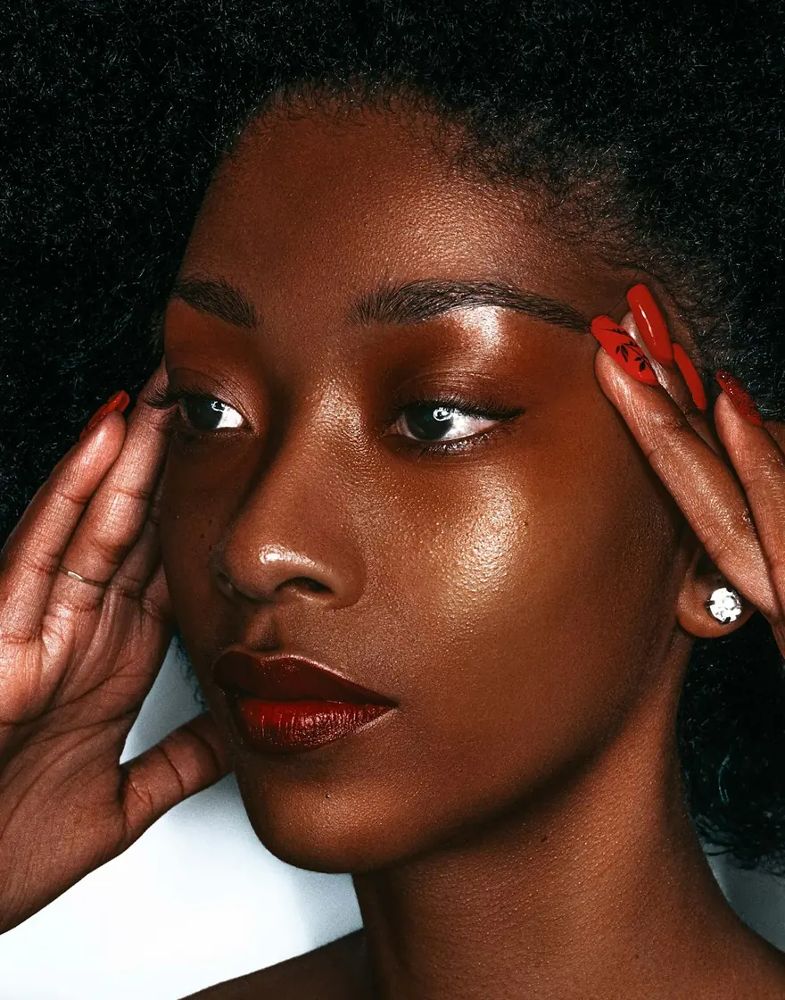

01
Consult
Bring your inspiration. Talk through your hair, skin and the look you have in mind.
Home/About
MEET THE CLASSIC SCULPT
Hair and beauty, together on 5th Circular Road in Cantonments, Accra.

THE SALON
The Classic Sculpt brings together hair styling, beauty treatments and wellness services. Whether you have a look in mind or want to discuss the possibilities, start with a conversation.
Discover the service collection ↗A MOMENT WORTH MAKING
From shampooing and styling to nails, lashes and skin treatments, explore care that fits your next chapter.
Talk to the salon ↗THE TCS WAY
Bring your inspiration. Talk through your hair, skin and the look you have in mind.

Careful, detailed work in a calm and comfortable space.

Leave with a finish you love, and the advice to keep it looking its best.

HAIR ARTISTRY
Rita is listed as the salon’s head stylist and artist on Fresha. Contact the studio to discuss the right service, your preferred artist and appointment availability.

MAKE A LITTLE ROOM FOR YOU
Monday to Saturday from 8am, Sunday from 1pm.
5th Circular Road, Cantonments, Accra.